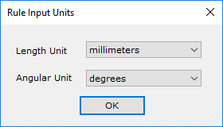

ルール入力単位 コマンドをクリックすると、ルール入力単位ダイアログボックスが表示されます。
ルール入力単位 コマンドをクリックすると、ルール入力単位ダイアログボックスが表示されます。
ルールマネージャーダイアログボックスにある ルール入力単位 コマンドをクリックすると、ルール入力単位ダイアログボックスが表示されます。
このダイアログボックスでは、DFMPro ルールマネージャーダイアログボックスでルールを編集する際の、入力される長さおよび角度の値に対する単位を設定できます。
この設定は、ディープ・ナロー・スロット（Deep-Narrow Slots）、最小内部コーナー半径（Minimum Internal Corner Radius）、均一肉厚（Uniform Wall Thickness）、および部品間最小クリアランス（Minimum Clearance Between Components）など、ルールパラメータとして絶対値を使用するルールに適用されます。
